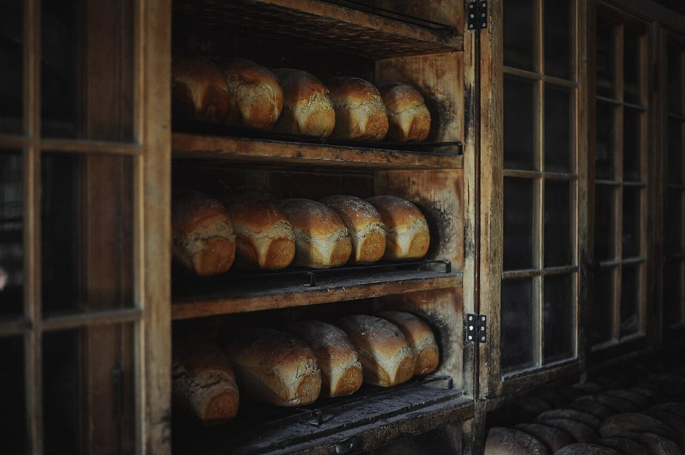
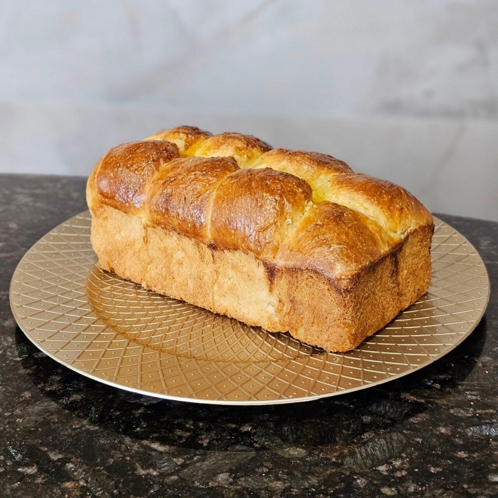
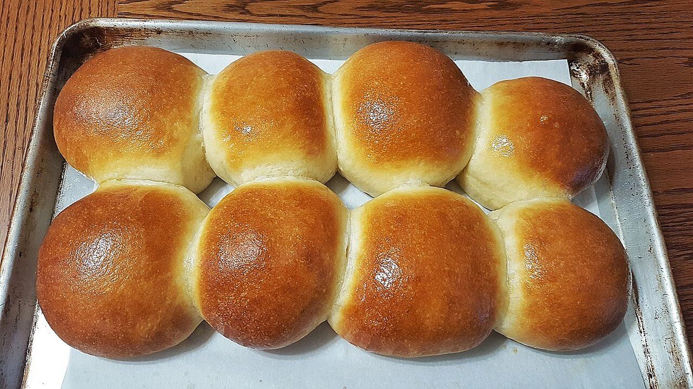
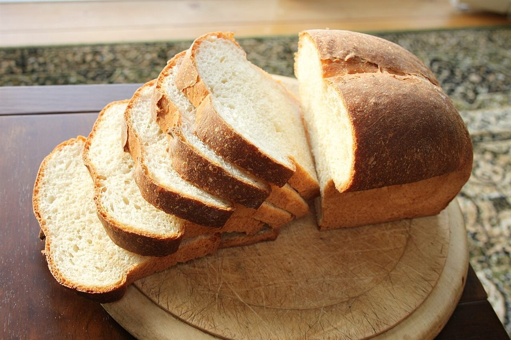
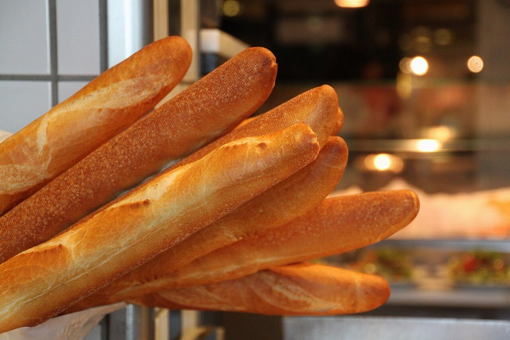
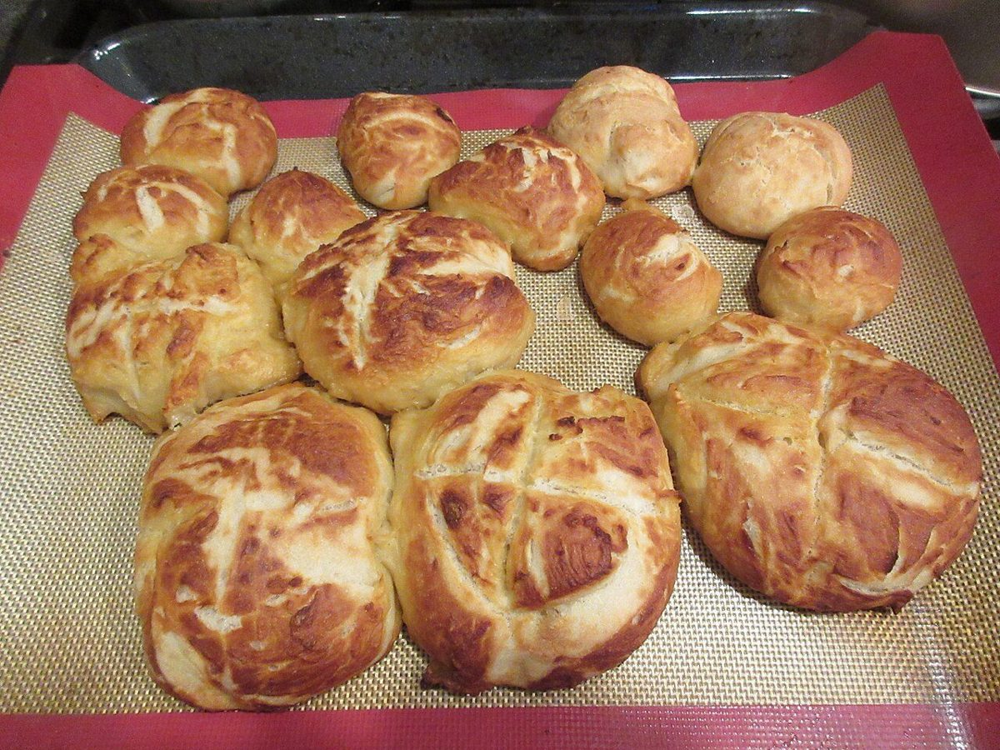

about
お店のこと
六ツ門町、鮮魚店のとなりにある小さなパン屋です。地元の記事では、パンを選ぶショーケースが「小さな宝石箱のよう」と紹介されています。
菓子パンと惣菜パンがあり、新商品や季節商品が多いときは100種類以上が並ぶとも伝えられています。どのパンも柔らかく食べやすく、どこかほっこりする優しい味、と評されています。朝6時30分ごろから開いているとの情報もあり、朝のパンを買いに立ち寄る人でにぎわう様子も紹介されています。
上記は地域情報サイトの記事(2023年掲載)にもとづく内容です。屋号「ChouChou」の由来や意味は確認できておらず、ここでは触れていません。最新の営業状況はInstagramでご確認ください。

bread
ショーケースのパン
菓子パンから惣菜パンまで。日によって顔ぶれが変わります。下の写真はイメージで、実際の商品とは異なります。












| 品目 | 菓子パン・惣菜パンなど(日替わり・季節商品あり) |
|---|---|
| 価格 | 準備中 |
| 営業時間 | 準備中 |
| 定休日 | 準備中 |
| 電話 | 準備中 |
voice
口コミ(イメージ例)
制作側が作成したイメージ例です。実在のお客様の声ではありません。
イメージ例
朝の散歩のついでに立ち寄りました。ショーケースを眺めているだけで楽しくて、あれもこれもと選んでしまいます。
イメージ例1
イメージ例
どのパンもふんわりやさしい味で、家族みんなで食べられます。子どもが自分で選ぶのを楽しみにしています。
イメージ例2
イメージ例
小さなお店ですが、種類が多くて迷います。惣菜パンは朝ごはんにぴったりでした。
イメージ例3
写真クレジット
写真はフリー素材のイメージで、お店・商品・地域を写したものではありません。縮小・切り抜きなどの加工をしています。
- croissant-whole.jpg: Croissant, whole / SKopp / CC BY-SA 3.0(撮影地: 不明)
- croissants-butter.jpg: Croissants au beurre (18953292873) / Herry Wibisono / CC0 1.0(撮影地: 不明)
- croissant-section.jpg: Croissant, cross section / SKopp / CC BY-SA 3.0(撮影地: 不明)
- croissant-iso.jpg: Croissant Isolated On White Background / personalgraphic.official / CC0 1.0(撮影地: 不明)
- roll-poppy.jpg: Bread roll with crumb hole, frontal view / SKopp / CC BY-SA 3.0(撮影地: 不明)
- roll-hole.jpg: Bread roll with crumb hole / SKopp / CC BY-SA 3.0(撮影地: 不明)
- kaiser.jpg: Kaisersemmel- / Kobako / CC BY-SA 2.5(撮影地: 不明)
- pretzel.jpg: Pretzel / 作者表記なし(Wikimedia Commons自己公開作品) / パブリックドメイン(撮影地: 不明)
- shelves.jpg: Loaves of Bread (Unsplash) / Clark Young / CC0 1.0(撮影地: 不明)
- buns.jpg: Fresh baked buns (18774541125) / jeffreyw / CC BY 2.0(撮影地: 不明)
- brioche.jpg: Brioche Nanterre / Msayago10 / CC BY-SA 4.0(撮影地: 不明)
- baguettes.jpg: Baguette-246424 / cocoparisienne / CC0 1.0(撮影地: 不明)
- tin.jpg: Tin Loaf - one slash in the crust / Mike Finn / CC BY 2.0(撮影地: 不明)
- pretzel-rolls.jpg: Pretzel rolls on a tray, December 2023 / Infrogmation / CC BY-SA 4.0(撮影地: 不明)
ライセンスの詳細は creativecommons.org をご覧ください。